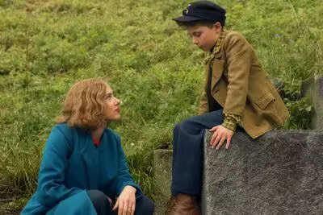
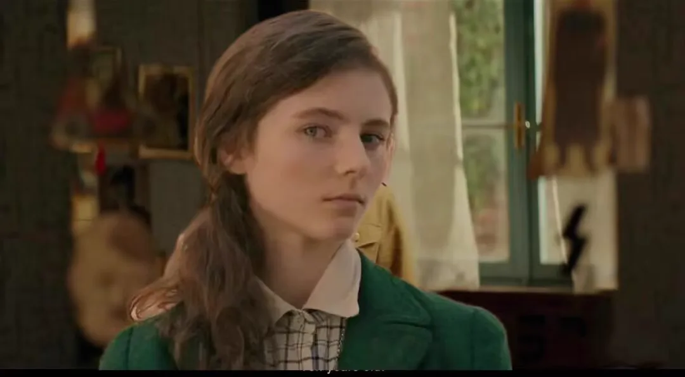
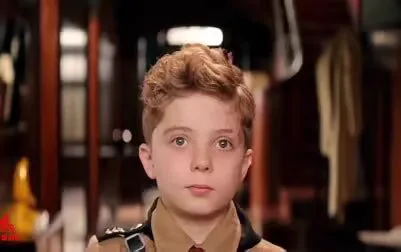
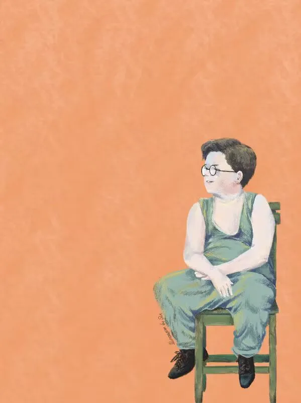
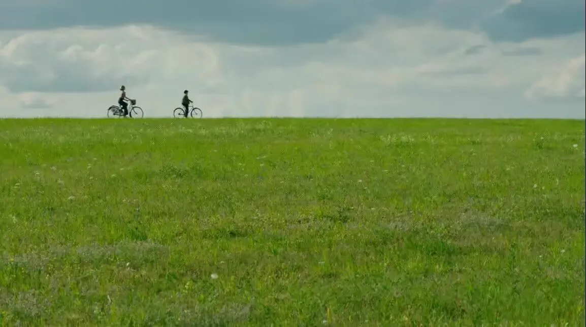
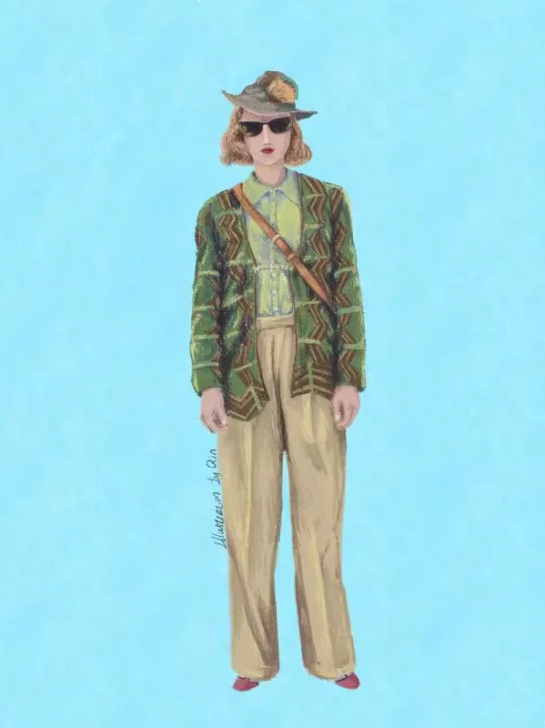
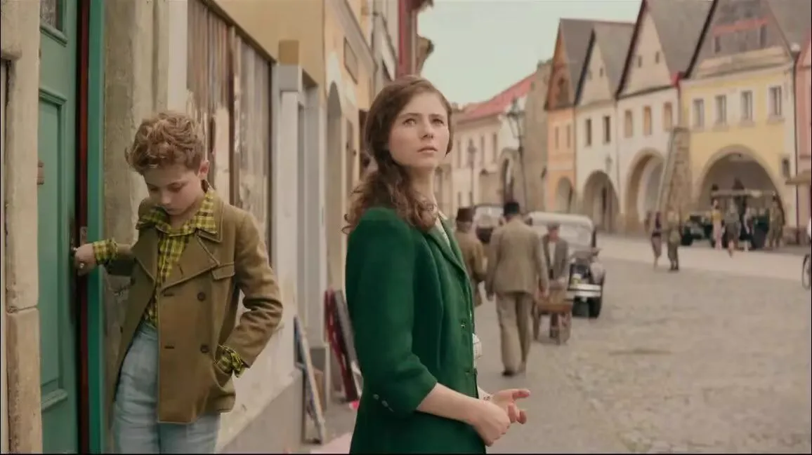
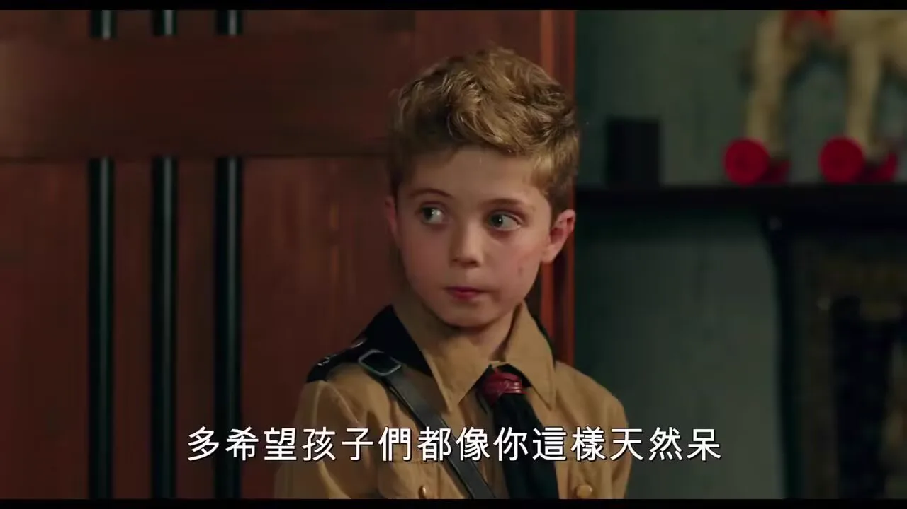
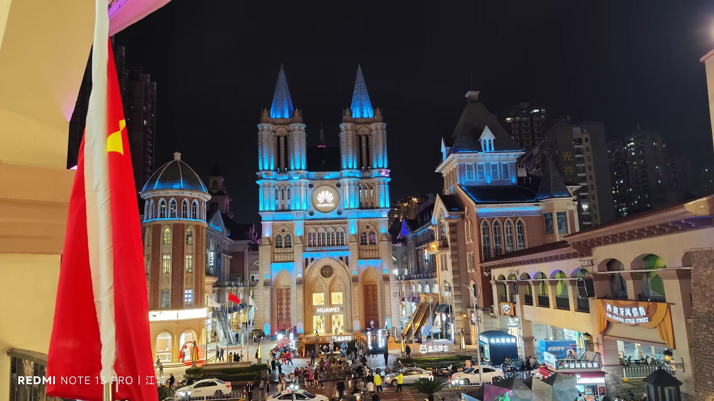
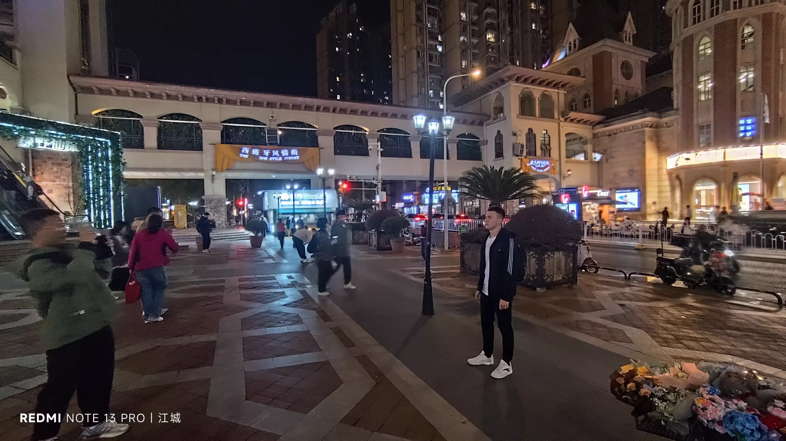

Journal · 2024-10-07
湖北省武汉市
编辑于2024年10月7日 19:50
我必须得给本校的安全教育点个赞了！
在诈骗分子面前，程老师、韩同学和我，守住了至关重要的“一元钱”！

2024年10月7日 21:05
本周“心宣部”推文，由杨好和柴桑两位同学编写








管管小王纸 ：添加时光轴记录：亲爱的朋友们，周一快乐！
今天想给大家推荐一部超棒的电影，一同加入这趟心灵奇旅
【影视推荐】
《乔乔的异想世界》
《乔乔的异想世界》以二战时期的德国为背景，讲述了深受纳粹思想影响的十岁男孩乔乔由最初的崇拜希特勒，憎恶犹太人，梦想加入希特勒青年团到经历一系列事情后思想发生转变的故事。本片视角独特，以一个孩童的视角展现了战争的残酷和荒谬，此外，电影将喜剧与悲剧融合，故事节奏流畅，能够更好的带来沉浸式体验。电影除了主人公乔乔，其他角色也同样让人印象深刻，如温柔坚强的乔乔妈妈，心存善意的犹太军官，以及坚毅勇敢的犹太女孩。影片深刻表达了对战争的批判和反思，同时也提醒人们要珍惜和平，发对战争。
乔乔在面对恐惧、困惑和失去时，逐渐学会勇敢、理解与爱。就像我们在生活中，也会满目崇拜某些群体，而忽视了自我的价值。
母亲罗西通过爱与勇气引导乔乔，犹太女孩艾尔莎通过与乔乔的互动，使他形成独立的价值观。母亲的离去，乔乔与艾尔莎的和解，真的令人感动，甚至爆哭
“人生到处知何似，应似飞鸿踏雪泥！”
生命中的飞鸿转瞬即逝，留给我们无尽的伤感和回味！让我们在乔乔的异想世界中，开启一场心灵之旅。


Edited on Oct 7, 2024 19:50
I really have to give our school's safety education a big thumbs up!
Faced with the scammers, Teacher Cheng, classmate Han and I held on to the all-important “one yuan”!
Oct 7, 2024 21:05
This week's post for the “Xinxuan Department” was written by two classmates, Yang Hao and Chai Sang.
管管小王纸 ：Adding a timeline entry: Dear friends, happy Monday!
Today I'd like to recommend a fantastic film to everyone — let's join this soulful journey together.
[Movie Recommendation]
Jojo Rabbit
Set in Germany during World War II, Jojo Rabbit tells the story of Jojo, a ten-year-old boy deeply influenced by Nazi ideology: from initially worshipping Hitler, loathing Jews, and dreaming of joining the Hitler Youth, his thinking gradually transforms after a series of events. The film offers a unique perspective, showing the cruelty and absurdity of war through the eyes of a child. Moreover, it blends comedy with tragedy, and its smooth narrative rhythm delivers a more immersive experience. Besides the protagonist Jojo, the other characters are equally memorable — such as Jojo's gentle yet strong mother, the kind-hearted Jewish officer, and the resolute and brave Jewish girl. The film profoundly critiques and reflects on war, while also reminding us to cherish peace and oppose war.
When faced with fear, confusion and loss, Jojo gradually learns courage, understanding and love. Just as in our own lives, we too may blindly admire certain groups while neglecting our own worth.
Mother Rosie guides Jojo through love and courage, while the Jewish girl Elsa, through her interactions with Jojo, helps him form independent values. The mother's departure and the reconciliation between Jojo and Elsa are truly moving, enough to bring one to tears.
“What is life's journey like, wherever it may be? It should be a swan treading on snow and mud!”
The swan of life passes in a flash, leaving us endless sorrow and reflection! Let us embark on a journey of the soul in Jojo's imaginary world.
Modifié le 7 oct. 2024 à 19:50
Je dois vraiment saluer l'éducation à la sécurité de notre école !
Face aux escrocs, M. Cheng, le camarade Han et moi avons préservé le si précieux « un yuan » !
7 oct. 2024 21:05
L'article de cette semaine pour le « département Xinxuan » a été rédigé par deux camarades, Yang Hao et Chai Sang.
管管小王纸 ：Ajout d'un enregistrement dans la chronologie : Chers amis, bon lundi !
Aujourd'hui, je voudrais vous recommander un film formidable et vous inviter à cette merveilleuse odyssée de l'âme.
[Recommandation cinéma]
Jojo Rabbit
Se déroulant dans l'Allemagne de la Seconde Guerre mondiale, Jojo Rabbit raconte l'histoire de Jojo, un garçon de dix ans profondément imprégné de l'idéologie nazie : d'abord vouant un culte à Hitler, haïssant les Juifs et rêvant de rejoindre les Jeunesses hitlériennes, sa pensée se transforme peu à peu au fil d'une série d'événements. Le film offre un point de vue singulier, montrant la cruauté et l'absurdité de la guerre à travers le regard d'un enfant. En outre, il mêle comédie et tragédie, et son rythme fluide procure une expérience plus immersive encore. Outre le héros Jojo, les autres personnages marquent tout autant les esprits — comme la mère de Jojo, douce mais forte, l'officier juif au cœur bienveillant, et la jeune fille juive résolue et courageuse. Le film exprime une profonde critique et une réflexion sur la guerre, tout en rappelant à chacun de chérir la paix et de s'opposer à la guerre.
Face à la peur, à la confusion et à la perte, Jojo apprend peu à peu le courage, la compréhension et l'amour. De même, dans nos propres vies, nous pouvons nous aussi vouer une admiration aveugle à certains groupes en négligeant notre propre valeur.
Sa mère Rosie guide Jojo par l'amour et le courage, tandis que la jeune fille juive Elsa, à travers ses échanges avec Jojo, l'aide à se forger des valeurs indépendantes. Le départ de la mère et la réconciliation entre Jojo et Elsa sont vraiment touchants, au point d'en pleurer à chaudes larmes.
« À quoi comparer le chemin de la vie, où que nous soyons ? Sans doute au cygne foulant neige et boue ! »
Le cygne de la vie s'évanouit en un instant, nous laissant un chagrin et des réminiscences infinis ! Entamons un voyage de l'âme dans le monde imaginaire de Jojo.
Bearbeitet am 07.10.2024 um 19:50
Ich muss der Sicherheitserziehung unserer Schule wirklich ein Lob aussprechen!
Vor den Betrügern haben Lehrer Cheng, Kommilitone Han und ich den entscheidenden „einen Yuan“ verteidigt!
07.10.2024 21:05
Der Beitrag dieser Woche für die „Xinxuan-Abteilung“ wurde von zwei Kommilitonen, Yang Hao und Chai Sang, verfasst.
管管小王纸 ：Zeitachse-Eintrag hinzugefügt: Liebe Freunde, einen schönen Montag!
Heute möchte ich euch einen großartigen Film empfehlen – lasst uns gemeinsam diese Seelenreise antreten.
[Filmempfehlung]
Jojo Rabbit
Jojo Rabbit spielt im Deutschland des Zweiten Weltkriegs und erzählt die Geschichte des zehnjährigen Jojo, der tief von der NS-Ideologie geprägt ist: vom anfänglichen Vergöttern Hitlers, dem Hassen der Juden und dem Traum, der Hitlerjugend beizutreten, wandelt sich sein Denken nach einer Reihe von Ereignissen allmählich. Der Film bietet eine einzigartige Perspektive und zeigt die Grausamkeit und Absurdität des Krieges aus den Augen eines Kindes. Zudem verbindet er Komödie und Tragödie, und sein flüssiger Erzählrhythmus sorgt für ein immersives Erlebnis. Neben dem Protagonisten Jojo bleiben auch die anderen Figuren eindrucksvoll — etwa Jojos sanfte, aber starke Mutter, der wohlwollende jüdische Offizier und das entschlossene, mutige jüdische Mädchen. Der Film übt tiefgreifende Kritik und Reflexion am Krieg und erinnert zugleich daran, den Frieden zu schätzen und sich gegen den Krieg zu stellen.
Angesichts von Angst, Verwirrung und Verlust lernt Jojo allmählich Mut, Verständnis und Liebe. So wie wir im Leben manche Gruppen blind verehren und dabei unseren eigenen Wert vernachlässigen.
Mutter Rosie führt Jojo durch Liebe und Mut, während das jüdische Mädchen Elsa ihm durch ihre Begegnungen hilft, eigenständige Werte zu entwickeln. Der Abschied der Mutter und die Versöhnung zwischen Jojo und Elsa sind wirklich ergreifend, bis hin zu Tränen.
„Womit ist die Reise des Lebens zu vergleichen, wo auch immer sie führt? Wohl mit einem Schwan, der Schnee und Schlamm betritt!“
Der Schwan des Lebens vergeht im Nu und hinterlässt uns unendliche Wehmut und Nachklang! Lasst uns in Jojos Fantasiewelt eine Reise der Seele antreten.